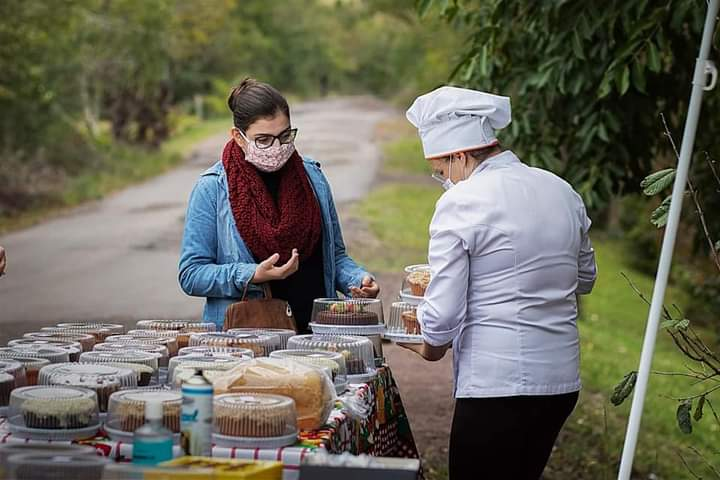

Um café que nasceu do portão
Da mesa na calçada ao cheirinho de bolo que atravessa a rua.
A ideia de fazer bolos surgiu quando uma vizinha disse que estava com vontade de comer um, bem quentinho. Era tempo de se cuidar em casa, então resolvi assar e deixar no portão. No primeiro domingo, fiz oito bolos, coloquei uma mesa na beira da estrada, uma caixinha com troco e álcool em gel. Os vizinhos passavam, pegavam um pedaço e deixavam um sorriso.
Primeiro vieram as receitas da família — aquelas que atravessam gerações sem precisar de medidas exatas. Depois chegaram os pães, a geleia feita na panela, o café moído na hora e, com o tempo, os vizinhos viraram amigos.
O Bolo no Portão cresceu devagar, do jeitinho certo: ganhou jardim, luz no fim da tarde, mesas que juntam risos e um cardápio que muda conforme a estação. A pressa ficou do lado de fora.
Hoje seguimos fazendo como aprendemos em casa: com calma, carinho e ingredientes honestos. Cada fatia tem um pouco de memória, e cada xícara é um “fica mais um pouquinho”.
“Servir com carinho e sorrir com os clientes é a nossa essência”
Um pouquinho do nosso clima
